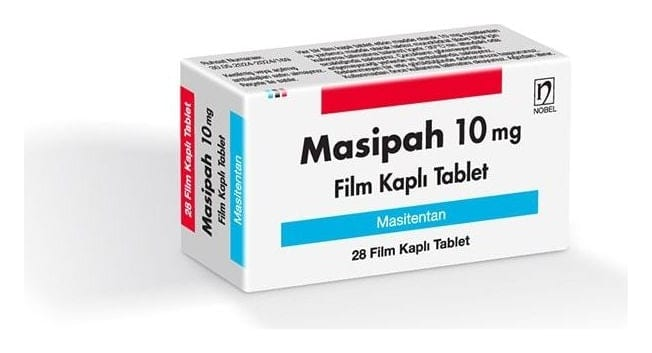

Masipah 10 mg Film Kaplı Tablet, 28 ADET

Ne için kullanılır
KT · Bölüm 1MASİPAH, "endotelin reseptör antagonistleri" adı verilen ilaç sınıfına bağlı olan masitentan etkin maddesini içerir.
MASİPAH 10 mg Film Kaplı Tablet: Beyaz- kırık beyaz renkli, yuvarlak bombeli film kaplı tabletler.
MASİPAH, 28 tablet içeren blister ambalajlarda 10 mg film kaplı tablet olarak tedarik edilir.
MASİPAH yetişkinlerde uzun süreli pulmoner arteriyel hipertansiyon (PAH) tedavisi için kullanılır; tek başına veya PAH tedavisine yönelik diğer ilaçlarla birlikte kullanılabilir. PAH, kanı kalpten akciğerlere (pulmoner arterlere) taşıyan kan damarlarındaki yüksek kan basıncıdır. PAH hastası olan kişilerde bu arterler daraldığı için kalbin kanı bu damarlar
üzerinden pompalamak için daha çok çalışması gerekir. Bu da kişinin kendisini yorgun hissetmesine, baş dönmesine ve nefes darlığına sebep olur.
MASİPAH pulmoner arterleri genişleterek kalbin kanı bu damarlar üzerinden pompalamasını kolaylaştırır. Böylelikle kan basıncı düşer, belirtiler hafifler ve hastalık seyrinde iyileşme gerçekleşir.